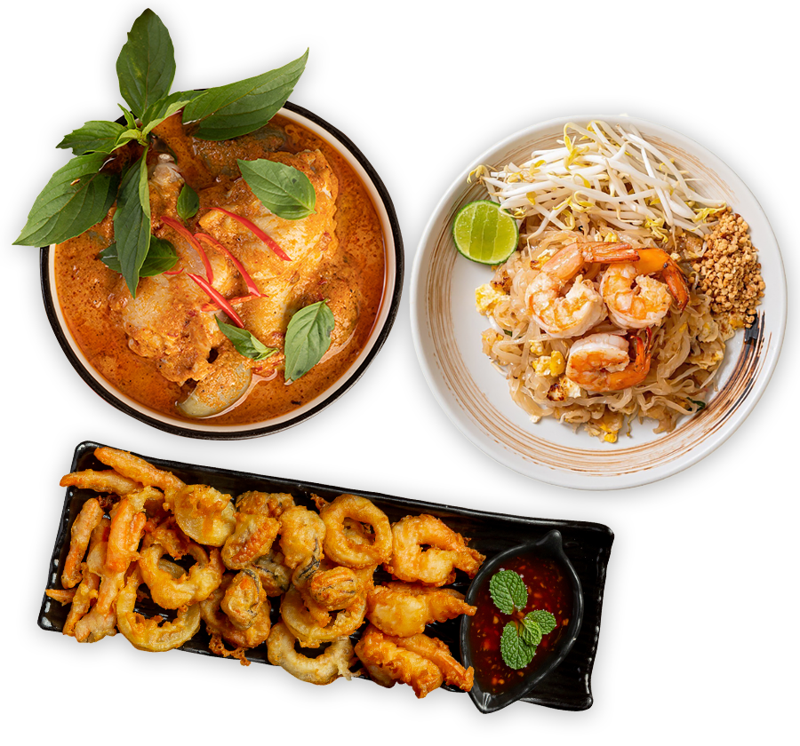
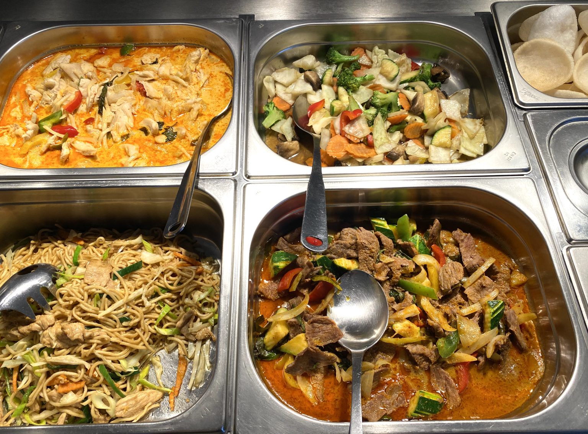

THAILÄNDSKA SMAKER PÅ TJÖRN
En smak av
Thailand.
Mitt i Skärhamn.
Från krämig curry till nywokade nudlar. Välkommen in för en god måltid, eller ta med dina favoriter hem.
Storgatan 2, Skärhamn 0304-67 12 23


EN PAUS MED SMAKLUNCH HOS OSS
En god paus.
Mitt i dagen.
Samla kollegorna, möt en vän eller kom förbi på egen hand. På vår lunchbuffé finns olika varmrätter att välja mellan.
Dryck, sallad och kaffe ingår.
Tisdag–fredag11.00–14.30
Hitta hitSNART HOS THAI KITCHEN
Nya smaker.
Samma plats.
Vi utökar vår meny med sushi à la carte. Håll utkik här – snart presenterar vi rätterna och hela sushimenyn.
Kommer snartVÄLKOMMEN IN
Vi ses i Skärhamn.
Ät hos oss eller ta med maten hem.
Du hittar oss på Storgatan 2.
Öppettider
- Måndag
- Stängt
- Tisdag–torsdag
- 11.00–20.00
- Fredag
- 11.00–21.00
- Lördag–söndag
- 12.00–21.00
Köket stänger 20 minuter före stängning.
Lunchbuffé · tisdag–fredag11.00–14.30
THAI KITCHEN SKÄRHAMN
Kom förbi.
Eller slå en signal.
Storgatan 2471 31 Skärhamn0304-67 12 23
Om du inte når oss: 073-636 69 46
info@skarhamnthai.se